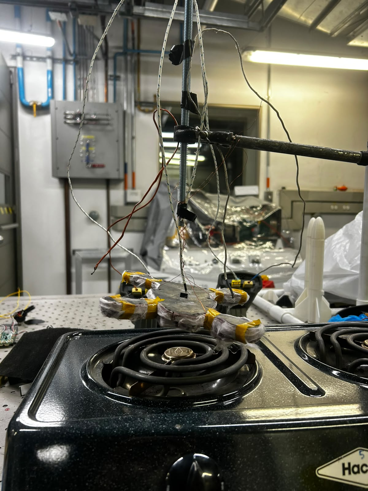
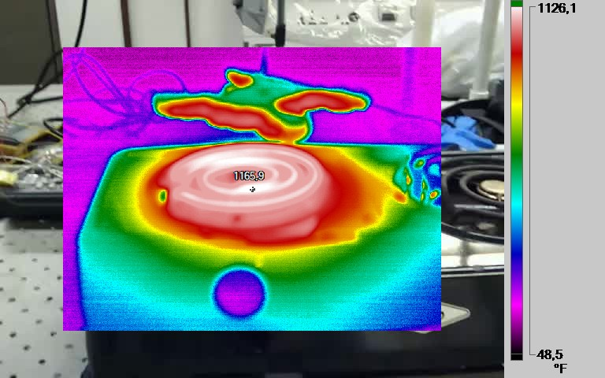

Elegir un material, adaptarlo a una geometría real y estudiar cómo responde al calor. Así investigamos la protección de un dron para avanzar hacia inspecciones más cercanas a incendios.
Vistas previas originales de los archivos CAD proporcionados por el equipo.
Protección seleccionadaPyrogel XTE
Base del montajePLA
Ensayo con resistencia4,5 cm de separación
PROTOTIPO FINAL · BASE Y CARCASA
El prototipo final: base y carcasa.
El prototipo final está formado por la base y la carcasa presentadas en esta página. Son las dos piezas del conjunto. La vista previa de la base muestra cuatro brazos con extremos circulares, un cuerpo central de contorno angular y una ranura rectangular.
Estas referencias permiten explicar cómo se adapta el Pyrogel XTE a la geometría del prototipo. El recubrimiento está adherido al soporte, sin cámara de aire.
Vista previa integrada en «Base 2do Prototipo.ipt», proporcionado por el equipo como uno de los dos componentes del prototipo final. No se ha verificado el ensamblaje 3D ni sus dimensiones.
Base del prototipo final · vista previa original del archivo IPT.
01 / DEL PROBLEMA A LA DECISIÓN
La selección del material cambió el proyecto.
El foco actual es limitar la transferencia de calor y la degradación térmica del material del dron, con una modificación compatible con su forma y su masa.
Recorrido documentado en las entregas E1–E5. El alcance actual incorpora la actualización del equipo.
E1
Definir qué había que proteger
La exposición térmica, la masa añadida y la integración sobre el dron aparecieron como restricciones conectadas. La temperatura de servicio orientó la búsqueda inicial.
E2
Abrir el abanico de materiales
Se revisaron películas reflectivas, aerogeles, poliimida, espuma PVDF y protección ablativa. No bastaba con soportar temperatura: también importaban el aislamiento, la reutilización y el peso.
E3
Medir antes de escoger
La disponibilidad local concentró los ensayos en Pyrogel XTE, Pyrogel XTF y PTFE, con ABS como referencia. Difusividad y DSC aportaron evidencia, pero todavía no un ganador concluyente.
E4
Elegir Pyrogel XTE
Al incorporar densidad, calor específico, conductividad estimada y capacidad de carga, el equipo seleccionó XTE. La decisión consideró cuánto calor transmite y qué masa añade la protección.
E5
Prototipar la adaptación
La base plana de PLA y un prototipo de fomi permitieron estudiar el corte, el ajuste y la fijación. La propuesta de bolsa separada de esa etapa evolucionó posteriormente al montaje adherido.
ENSAYO
Evaluar el XTE adherido
El montaje final utiliza Pyrogel XTE real adherido a la base, sin cámara de aire, según la actualización del equipo. En las 20 muestras del ensayo, el punto interior permaneció por debajo del umbral térmico de 93 °C.
02 / CARACTERIZACIÓN DE LOS MATERIALES
Cuatro formas de estudiar una misma barrera.
Antes de evaluar el dron recubierto, se caracterizaron muestras de XTE y XTF. Cada ensayo responde una pregunta distinta: cómo se propaga el calor, qué señales aparecen al calentar, cómo cambia la masa y qué propiedades se pueden calcular.
Fuente principal: informe personal de caracterización térmica de Nicolás David Ortiz Cabrales, actualizado el 11 de noviembre de 2026. Los ensayos flash se ejecutaron bajo supervisión; DSC y TGA fueron realizados por técnicos de laboratorio, según el informe. Consultar el informe completo (15 páginas) ↗
DFX200 / MÉTODO FLASH
¿Qué tan rápido se propaga una variación de temperatura?
Un pulso de energía llega a una cara del espécimen y se registra la respuesta de la cara opuesta. El equipo exportó resultados de difusividad con los tratamientos Parker y Clark & Taylor.
Resultado que aportó a la elección
En los cuatro segmentos estudiados, la difusividad media exportada de XTE fue menor que la de XTF con ambos tratamientos. Es una evidencia de la campaña de muestras, distinta de la conductividad nominal publicada en las fichas.
Cuatro temperaturas · tres disparos por segmento sobre el mismo espécimen · 24 disparos en total entre ambos materiales.
Figura original del informe, p. 4. Las barras representan la desviación estándar de tres disparos sobre el mismo espécimen; no corresponden a tres muestras independientes. Abre la gráfica para ampliar.
Difusividad Clark & Taylor, en 10⁻⁷ m²/s · media ± una desviación estándar (informe, p. 3)
Temperatura media
XTE
XTF
25,42 °C
1,225 ± 0,041
1,925 ± 0,048
69,22 °C
1,579 ± 0,033
2,751 ± 0,102
127,62 °C
1,456 ± 0,002
2,247 ± 0,047
177,60 °C
1,446 ± 0,009
2,151 ± 0,032
El CV de los disparos Clark & Taylor no superó 3,71 %. El informe conserva ambos tratamientos y señala métricas de ajuste negativas en 15 de los 24 registros Parker. No se dispuso de las curvas originales de señal frente al tiempo ni de la definición de esa métrica.
Preparación de las muestras y trazabilidad
Se prepararon discos de diámetro nominal de 12,7 mm. Hubo separación de capas durante la extracción y se escogieron cualitativamente las porciones más cohesionadas.
Las masas y espesores se registraron después de aplicar los recubrimientos de opacificación, incluida pintura de plata en una cara. XTE: 0,1802 g y 1,700 mm; XTF: 0,2245 g y 3,383 mm. Estos registros no representan la masa del aerogel sin recubrimiento.
Informe, pp. 9, 12 y 13. Espesor medido con calibrador, sin compresión intencional y sin registro de fuerza de contacto.
Registro fotográfico original, anexo B del informe.
DSC Q200 / FLUJO DE CALOR
¿Qué señales aparecen al calentar y volver a calentar?
El DSC registra el flujo de calor durante un programa de temperatura. El informe separa el primer calentamiento, el enfriamiento y el segundo calentamiento para observar diferencias entre ciclos.
Condiciones recuperadas de los archivos
Programa aproximado de 23 a 500 °C, enfriamiento hasta 23 °C y nuevo calentamiento hasta 500 °C; rampas de +10, −10 y +10 °C/min, con mesetas de 5 min. Nitrógeno a aproximadamente 50 mL/min y recipiente Tzero Aluminum Hermetic.
Estas condiciones pertenecen a DSC. El informe no las atribuye a los ensayos TGA.
Figura original del informe, p. 7. Flujo exportado en mW, sin normalizar por masa ni suavizar; exotermia positiva. Abre la gráfica para ampliar.
Mínimos identificados en el primer calentamiento (informe, p. 7)
Material
Temperatura del mínimo
Flujo de calor
XTE
322,2 °C
−1,720 mW
XTF
269,3 °C
−2,010 mW
XTF
311,7 °C
−1,887 mW
El informe no observó picos equivalentes en el segundo calentamiento. Esas temperaturas son mínimos de señal dentro de ventanas de búsqueda: no se presentan como temperaturas de fusión, degradación o servicio del dron, ni se asigna un mecanismo químico a los picos.
Capacidad calorífica y efecto de la masa utilizada
Canal total Heat Capacity, figura original del informe, p. 8. La capacidad de la muestra en mJ/K es distinta del calor específico normalizado por masa.
El informe calculó una capacidad específica aparente como c_app = C_exportada / masa. La elección de la masa cambia el resultado: A usa las masas del archivo (3,6 mg para XTE y 4,4 mg para XTF); B usa las comunicadas (8,4 y 7,9 mg). Son dos normalizaciones del mismo registro, no dos ensayos ni límites de incertidumbre.
c_app en J/(g·K), segundo calentamiento; mediana en T ± 0,5 °C (informe, p. 8)
Temperatura
XTE · A / B
XTF · A / B
50 °C
0,972 / 0,417
0,854 / 0,476
100 °C
1,004 / 0,430
0,933 / 0,520
150 °C
1,010 / 0,433
1,001 / 0,558
200 °C
0,973 / 0,417
1,076 / 0,599
Los canales reversibles y no reversibles estaban a cero. Por ello se presenta el canal total exportado, sin atribuirle una separación reversible MDSC ni sustituir con estos valores los calores específicos iniciales de los cálculos DFX.
TGA / MASA RELATIVA Y DERIVADA
¿Cómo varía la masa durante el calentamiento?
La termogravimetría registra la masa de una muestra durante un programa térmico. En la documentación disponible se revisaron las curvas originales de masa relativa y su derivada.
Lecturas aproximadas de las gráficas
El informe leyó una masa relativa final de aproximadamente 96,2 % para XTE y 99,0 % para XTF. En XTF también observó incrementos y discontinuidades de señal.
No se dispuso de la serie digital, el programa térmico, la atmósfera ni el caudal del ensayo TGA.
Figura original del informe, p. 9. Negro: masa relativa; rojo: derivada. Las escalas verticales son distintas. Abre la gráfica para leer los ejes a tamaño completo.
Lecturas gráficas reportadas, no datos digitales de precisión
Material
Masa relativa al final del trazo
Observación
XTE
≈ 96,2 %
Final del trazo próximo a 890 °C.
XTF
≈ 99,0 %
Se registran incrementos y discontinuidades de señal.
Las pendientes visuales no permiten ordenar la estabilidad de ambos materiales con estas escalas. La masa conservada no demuestra por sí sola aislamiento, resistencia mecánica ni una temperatura de operación segura del dron. Estos datos no se usan para atribuir a XTE una superioridad TGA frente a XTF.
DENSIDAD APARENTE / GEOMETRÍA Y MASA
¿Qué masa añade el material por volumen?
La densidad aparente se calculó con la masa y las dimensiones medias de láminas intactas sin recubrimiento: ρ = masa / volumen. Incluye la estructura porosa del material.
Resultado de las láminas
XTE: 164,3 kg/m³. XTF: 165,7 kg/m³.
No se confirmó si las tres lecturas correspondían a piezas distintas o a mediciones repetidas. El informe no estima variabilidad entre especímenes.
Conductividad calculada a partir de otras propiedades
El informe combinó difusividad Clark & Taylor, densidad de las láminas y calores específicos iniciales constantes mediante k* = α · ρ · c_p. Usó 995 J/(kg·K) para XTE y 878,5 J/(kg·K) para XTF.
k* condicional en mW/(m·K) · no es una medición directa de conductividad (informe, pp. 5–6)
Temperatura
Ficha interpolada · ambos
k* de XTE
k* de XTF
25,42 °C
20,8
20,0
28,0
69,22 °C
22,1
25,8
40,0
127,62 °C
24,4
23,8
32,7
177,60 °C
26,9
23,6
31,3
La ficha interpolada procede de los valores comerciales a 0, 100 y 200 °C. k* depende de las mediciones y de los valores de c_p utilizados; por eso se mantiene separado de la ficha y del nuevo canal DSC.
Comparación entre DFX y una difusividad calculada
Usando la misma conductividad de ficha, 0,028 W/(m·K), y los valores iniciales de densidad y calor específico, el informe obtuvo 1,713 × 10⁻⁷ m²/s para XTE y 1,924 × 10⁻⁷ m²/s para XTF mediante α_calculada = k / (ρ · c_p). Son referencias constantes por material, no curvas α(T) medidas con DSC. Las tablas de las pp. 4–6 y el anexo D documentan la comparación por segmento y disparo.
Cómo se conectan estos ensayos con la selección
La campaña DFX aportó una menor difusividad exportada de XTE en los segmentos estudiados; DSC permitió documentar señales y cambios entre ciclos; TGA añadió información de masa; y la densidad ayudó a evaluar la integración. La decisión combina esas evidencias con las fichas técnicas y con el ensayo posterior del recubrimiento adherido sobre el dron.
Los resultados corresponden a especímenes y registros concretos. El informe declara su carácter académico y técnico; no constituye un certificado institucional de propiedades ni reemplaza la validación del prototipo completo.
03 / LA ELECCIÓN
Una selección exitosa frente al requisito térmico evaluado.
La selección de Pyrogel XTE fue un éxito para el objetivo de aislamiento verificado en el montaje: las 20 lecturas del punto interior se mantuvieron por debajo del umbral de 93 °C durante los 570 s registrados. Las fichas técnicas respaldan su aptitud como aislante flexible de alta temperatura.
Umbral del proyecto93 °C
Máximo interior medido85,5 °C
Margen observado7,5 °C
Fuente: umbral térmico de E5 y primera tabla del Excel, Hoja1 A1:H21. El máximo se registró a los 540 s. La meta adicional de 85 °C se superó en 0,5 °C; el cumplimiento demostrado corresponde al umbral de 93 °C y al punto medido, no a todas las piezas ni a todos los requisitos de vuelo.
Por qué el material es adecuado para esta función
Baja conductividad: la ficha de XTE declara 0,028 W/(m·K) a una temperatura media de 200 °C, con ensayo ASTM C177.
Capacidad térmica de uso: declara hasta 650 °C y aprobación del ensayo de superficie caliente ASTM C411. Es una propiedad del aislante, no una temperatura admisible del dron.
Adaptación geométrica: su formato flexible y recortable permite ajustarlo al contorno y las puntas de la base.
Decisión del proyecto, contrastada con las fichas del fabricante
Material
Papel en la comparación
Lo que decidió el equipo
Pyrogel XTE SELECCIONADO
Manta flexible de aislamiento basada en aerogel.
Seleccionado en E4 y utilizado en el montaje final adherido. Su uso queda respaldado por las propiedades declaradas y el cumplimiento del criterio térmico interior en el ensayo.
Pyrogel XTF
Manta de aislamiento y protección pasiva contra incendios.
Fue comparado durante el proyecto. Las fichas XTE y XTF publican la misma tabla de conductividad nominal; no se atribuye a XTE una superioridad universal.
PTFE
Alternativa de material y posible piel externa.
Su densidad y su conductividad limitaron su conveniencia como barrera aislante en un dron con poca capacidad de carga.
ABS
Referencia de la carcasa original.
Los ensayos mostraron la necesidad de proteger también el polímero estructural.
E4 reporta una diferencia entre las conductividades estimadas por el equipo. Esa evaluación es distinta de las fichas comerciales: a 200 °C de temperatura media, ambas declaran 28 mW/(m·K), equivalentes a 0,028 W/(m·K), y una densidad nominal de 0,20 g/cm³. Fuentes: XTE, pp. 1–2, XTF, pp. 1–2 y Aspen Aerogels: XTF.
10 mmEspesor de XTE en el diseño de E5
La selección no elimina el compromiso con la masa: E5 estimó 23,3 g de XTE para una superficie de 141,7 cm². Son valores calculados del diseño, no una medición del recubrimiento fotografiado.
04 / DEL MATERIAL A LA GEOMETRÍA
Adaptar el recubrimiento al contorno del dron.
La carcasa final tiene un contorno angular y una estructura de marcos con aberturas, como muestra la vista previa del archivo original. La base complementaria conserva cuatro brazos y un cuerpo central angular con ranura. Ambos archivos definen las referencias del prototipo final; la animación anterior aún no incorpora sus geometrías verificadas. El XTE se recorta y se adapta al soporte que se busca proteger.
En el montaje final, el material está adherido directamente a la base. No hay un espacio ni una cámara de aire entre el XTE y el dron.
Configuración final confirmada por el equipo. La propuesta separada de E5 corresponde a una etapa anterior. El esquema representa la disposición de las capas y no está a escala.
MONTAJE FINAL · RECUBRIMIENTO ADHERIDO
La manta aporta el aislamiento térmico y la unión adherida mantiene el recubrimiento ajustado al contorno de la base.
ALCANCE ACTUAL DE LA ELECTRÓNICA
La electrónica acompaña la investigación del material.
El montaje conserva la electrónica original del dron y añade un sensor de temperatura, un acelerómetro y una batería de alimentación. Las propuestas anteriores de cámaras, GPS y procesamiento adicional no se presentan como componentes del montaje final.
05 / MEDIR EL CALENTAMIENTO
Del montaje a las temperaturas.
El dron se suspendió a 4,5 cm de una resistencia eléctrica. El Excel registra 20 muestras, cada 30 segundos, entre 0 y 570 s. El equipo confirmó el uso de XTE real en este ensayo.

Montaje experimental. Las temperaturas y la separación corresponden a este ensayo estacionario.

Termografía aportada por el equipo. La imagen conserva su escala original en °F; no se extrajeron temperaturas de sus colores.
Fuente: primera tabla del Excel, Hoja1, A1:H21. La segunda tabla parcial se conserva fuera de esta comparación porque su origen no está identificado.
Cumplimiento térmico observado
La selección fue exitosa respecto al umbral térmico evaluado: el punto interior no superó 93 °C en ninguna de las 20 muestras. El máximo fue 85,5 °C a los 540 s, con un margen de 7,5 °C. Al finalizar, se midieron 325 °C debajo y 84,9 °C dentro.
La meta adicional de 85 °C se superó en 0,5 °C. El cumplimiento descrito corresponde al punto interior durante este ensayo de 570 s; no extiende la validación a masa, estabilidad de vuelo, integridad de todas las piezas ni distancia operativa a un incendio. Sin una prueba equivalente sin recubrimiento, la diferencia de temperaturas no cuantifica por sí sola una mejora causal.
DEL DISEÑO ANTERIOR AL MONTAJE REAL
La conclusión se apoya en el ensayo del XTE adherido.
ANTECEDENTE · ENTREGA 5
Una propuesta anterior
La configuración C de E5 incluía una bolsa separada. Sus temperaturas calculadas corresponden a esa hipótesis y no se trasladan al montaje final adherido, que no tiene cámara de aire.
VALIDACIÓN TÉRMICA · EXCEL
85,5 °C de máximo interior
El ensayo real con XTE adherido aporta la evidencia para el cumplimiento del umbral interior de 93 °C. Las fichas del fabricante respaldan las propiedades aislantes y la adaptación geométrica del material.
El resultado respalda el éxito de la selección para el criterio térmico ensayado. La aptitud de un aislante y la validación integral de una aeronave son alcances diferentes.
06 / EXPLORAR EL PROTOTIPO
Visualización térmica del ensayo.
Esta visualización conserva la geometría aproximada anterior para recorrer las temperaturas del ensayo. No representa la carcasa final del archivo IPT mostrado al inicio. La sustitución geométrica queda pendiente de una conversión 3D verificable; los valores del ensayo no cambian.
El campo de color interpola las lecturas y usa un modelo interior reducido. La llama es ilustrativa: no corresponde al ensayo con resistencia ni modifica sus temperaturas.
Ver el video de la representación anterior
Geometría ilustrativa anterior al archivo de la carcasa final; los valores corresponden al Excel del ensayo estacionario.
07 / TRAZABILIDAD
La historia está en los informes.
El contenido distingue las alternativas iniciales, la selección del aislante, los cambios de montaje y la evidencia posterior. Las metas de diseño no se presentan como prestaciones ya demostradas.
E1
Problema y requerimientosEntrega 1 · contexto, objetivos y QFD inicial.
E2
Alternativas de protecciónEntrega 2 · estado del arte y comparación preliminar.
E3
Campaña experimental de materialesEntrega 3 · difusividad, DSC y tratamiento de datos.
E4
Selección de Pyrogel XTEEntrega 4, pp. 1–4 · aislamiento, masa y propuesta de integración.
E5
Base de PLA y bolsa separadaEntrega 5, pp. 1–4 y anexo C · prototipo de ajuste y modelo por capas.
LAB
Caracterización térmica de XTE y XTFInforme personal de Nicolás David Ortiz Cabrales, actualización del 11 de noviembre de 2026 · DFX, DSC, TGA, densidad y cálculos derivados. Consultar el documento ↗
CAD
Carcasa del prototipo finalArchivo «Carcasa 2do Prototipo.ipt» proporcionado como componente del prototipo final junto con la base. La imagen principal procede de su vista previa integrada. Descargar el original ↓
CAD
Base del prototipo finalArchivo «Base 2do Prototipo.ipt» proporcionado como componente del prototipo final junto con la carcasa. Imagen extraída de su vista previa integrada. Descargar el original ↓
DATOS
Ensayo posterior con XTE realExcel de termografía y termocuplas · confirmaciones del equipo en esta revisión.